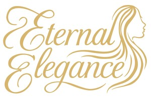

Trade Mark Journal No.2025/046 14 November 2025
UK00004273688 9 November 2025 (3,26)

- Class 3
- Hair shampoos; Hair styling lotions; Hair cosmetics; Hair lotions; Hair shampoo; Hair texturizers; Hair serums; Hair colourants; Hair lighteners; Hair moisturizers; Hair pomades; Dyes for the hair; Hair dyes; Hair conditioners; Hair creams; Hair colorants; Styling gels for the hair; Hair styling gels; Styling sprays for the hair; Hair styling waxes; Hair moisturisers; Hair balms; Hair mascara; Hair styling gel; Hair oils; Hair mousses; Mousses being hair styling aids; Hair lotion; Hair lacquers; Hair conditioner; Shampoos for human hair; Mousses [toiletries] for use in styling the hair; Cosmetic hair lotions; Products for protecting coloured hair; Hair sprays; Hair gels; Hair dye; Cosmetic preparations for the hair and scalp; Hair styling preparations; Colouring lotions for the hair; Hair bleaches; Tints for the hair; Hair mousse; Hair protection lotions; Non-medicated hair shampoos; Hair styling spray; Hair gel; Hair masks; Hair care lotions; Hair nourishers; Styling paste for hair; Hair care serums; Hair permanent treatments; Hair rinses; Hair moisturising conditioners; Hair straightening preparations; Cosmetics for the use on the hair; Hair color; Hair protection creams; Hair conditioner bars.
- Class 26
- Hair extensions.
Lisa corfield